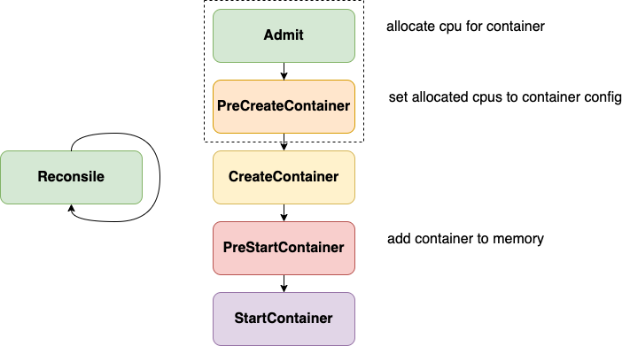

那些年，我们一起追的Bug
背景
上半年遇到了一些绑核相关的 bug，分析了其原因，但没有总结整理下来，现在又碰到了，补一下作业，同时也希望可以帮助大家快速从坑里爬出来。本篇会总结绑核相关的 bug，部分官网已修复，部分尚未修复，与 k8s 版本有关，感兴趣的可以对 k8s 进行一些考古，翻一翻从 1.8 到现在 CPU Manager 的发展过程，当然下面也会做简单介绍。
发展历程
CPU Manager 作为 alpha 特性引入 Kubernetes 1.8 版本，1.12 开始转换为 beta 状态。如何使用，参数配置不是这里的重点，可以参考官网。在此基础上还有 NUMA Topology Aware 的能力，可以参考前篇。
问题表现
绑核的功能实现是在 kubelet 当中的，在容器启动之前会经过 admit 机制进行校验宿主上是否有足够资源供绑核使用。如果资源不足，则容器准入失败，会报错提示 cpu 资源不足，not enough cpus available to satisfy request。
此问题存在于1.8之后的所有版本中，所以如果在线上遇到的话不要惊讶，一直在修复，从未被彻底修复，这可能也是为什么直到现在仍然处于 beta 状态的原因。针对此现象的所有的 PR 都只是对已知原因的修复，且当前仍存在原因已知但尚未修复的问题。
解决方案
根据我的经验，遇到此类问题最直接有效的解决方案分三步，就如同把大象装冰箱一样简单：
- 停止 Kubelet 进程
- 删除本地 cpu_manager_state 文件
- 重启 Kubelet 进程
可以解决99%的此类问题，如果还是无法解决且 k8s 版本 < 1.18，那就需要祭出更厉害的武功秘籍了：
- docker ps 查找同 Pod 同 Conatiner Name（.spec.containers 中同一个 name 的 container）的记录，大概率会存在多条记录，例如存在 Created 状态的 container，这时需要删除这些个多余的 container
- 按照上面的1，2，3再来一次即可
如果还是没有解决，那么恭喜你，你可能遇到未知原因的问题了，希望你可以深入排查并反馈给社区，帮助更多受害者。
原理介绍

上图是最新版本 k8s 中的实现，在不同 k8s 版本中实现方式不同，上图中的虚线框中的部分在低版本中是不存在的。在低版本中，计算绑核信息以及设置绑核信息到容器是在 Reconsile 和 PreStartContaier 中实现的，而现版本是在 Reconsile 和 Admit、PreCreateContainer 实现的，即在 Admit 时会计算出容器所需资源并保存在内存中，在真正调用 Docker 之前，从内存中获取到容器绑核信息并设置到其 Config 中，然后传递给 Docker，而老版本中是先创建出来容器，然后再调用 Docker API 去更新其绑核信息。
相关ISSUE & PR
ISSUE
感兴趣的可以翻翻历史 ISSUE，此问题从 1.8 开始有大量相关的 ISSUE，下面列几个比较典型的
Internal PreStartContainer hook failed: not enough cpus available to satisfy request #63018
[cpumanager] AddContainer error: not enough cpus available to satisfy request #79159
TopologyManager: Guarantee Aligned resources for Multiple Containers #83476
The CPU manager does not work correctly for the guaranteed pod with multiple containers #103952
PR
Make CPU manager release CPUs when Pod enters completed phase #52363
cpumanager: rollback state if updateContainerCPUSet failed #67430
clean containers in reconcileState of cpuManager #68619
Update CPUManager stored state semantics #84462
Fix exclusive CPU allocations being deleted at container restart #90377
Do not clear state of pods pending admission for CPU/Memory/Device manager #103979
Slack 上有一段专门针对 CPU Manager 问题的讨论，可以加深对问题的理解，见这里。
其中针对1.22及以上版本绑核相关的 bug 和 kubelet 重构有关，参考这里。在 1.22 开始 kubelet 进行了很大的重构，参考 Commit，在此 PR 合入之后出现了一些相关的 Bug 以及 Failing Test 的错误，针对其想要实现的功能也存在一个文档。这里不再多说，针对上述 Commit 和 设计文档会再另开一篇来介绍，因为其本质和 CPU Manager 无关，但是是非常重大的一个改变。
已知问题
1.18 之前的版本
需要根据具体使用的 k8s 版本确定有哪些修复的 PR 还没有合入。
即使所有 PR 都已经合入了，也还是可能遇到问题的。原因如下：当遇到机器异常，如 docker 异常、load 高、io 使用率高时问题出现概率会增加，根本原因就在于 1.18 之前的版本 cpu_manager_state 文件对应的数据结构为 map[ContainerID]resource，也就是说他是以 container ID 作为 Key 的，这也就是为什么会有上面解决方案中提到更厉害的的秘籍，因为同 Pod，同 Container Name 存在多个 Container，每个都有自己的 ID，但逻辑上应该只记录一个到 cpu_manager_state 中，但实际上记录了多个。
在 1.18 之后，cpu_manager_state 文件数据结构发生改变，变为map[PODUID]map[ContainerName]resource，就可以避免出现同 Pod 同 Container Name 的容器占用多份资源的问题。
所有版本
对于强制删除的Pod，如果在其删除过程中遇到某些原因导致 Container 无法删除导致其内存和 cpu_manager_state 中记录的信息与实际使用不符时，也可能会遇到此问题。这种问题理论上通过简单的3步解决方案即可解决。
总结
如果一定要使用绑核功能，请尽量使用 1.18 及以上版本，同时当前最新版 1.23 尚未正式 release，且 1.22 开始对 Kubulet 进行了部分重构，存在大量已知问题，建议采用 1.18 ~ 1.21 中的版本。如果还是遇到此问题，参考上述解决方案。